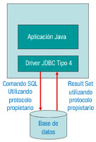

Tipo 3: JDBC-Net pure Java driver.
Tiene una aproximación de tres capas. Las peticiones JDBC a la base de datos se pasan a través de la red al servidor de la capa intermedia (middleware). Este servidor traduce este protocolo independiente del sistema gestor a protocolo específico del sistema gestor y se envía a la base de datos. Los resultados se mandan de vuelta al middleware y se enrutan al cliente.
Este driver está basado en servidor, por lo que no se necesita ninguna librería de base de datos en las máquinas clientes. Normalmente, un driver de tipo 3 proporciona soporte para balanceo de carga, funciones avanzadas de administrador de sistemas tales como auditoría, etc.
Es útil para aplicaciones en Internet.
Muy poco frecuente
TIPO4: controlador Java puro para directo a base de datos


Tipo 4: Protocolo nativo.
En este caso se trata de conectores que convierten directamente las llamadas JDBC al protocolo de red usando por el sistema gestor de la base de datos. Esto permite una llamada directa desde la máquina cliente al servidor del sistema gestor de base de datos y es una solución excelente para acceso en intranets.
Como ventaja se tiene que no es necesaria traducción adicional o capa middleware, lo que mejora el rendimiento, siendo éste mejor que en el caso de los tipos 1 y 2.
Además, no se necesita instalar ningún software especial en el cliente o en el servidor.
Como inconveniente, de este tipo de conectores, el usuario necesita un driver diferente para cada base de datos.
Es el más común.
Unos ejemplos de este tipo de conector es Oracle Thin y MySQL Conector/J
En la siguiente web puedes ver información sobre Oracle Thin y otros conectores de Oracle.